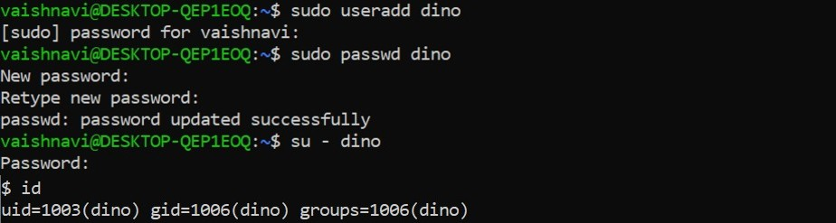
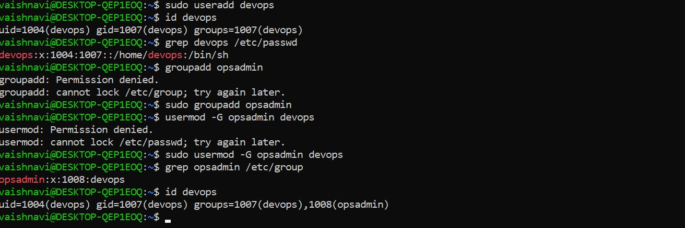
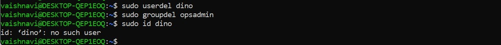

ADD USER, SET PASSWORD & SWITCH TO USER
ADD USER, GROUP & USER INTO GROUP
DELETE USER & GROUP
3. The /etc/shadow file
This file stores users password and password related information. Just like /etc/passwd file, this file also uses an individual line for each entry.